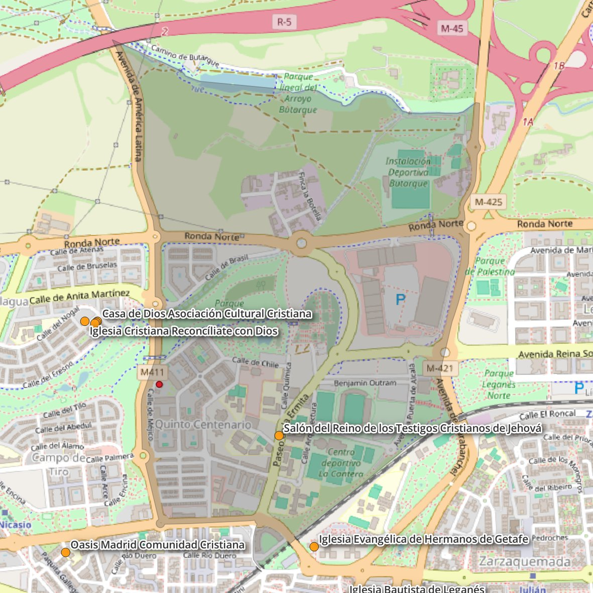
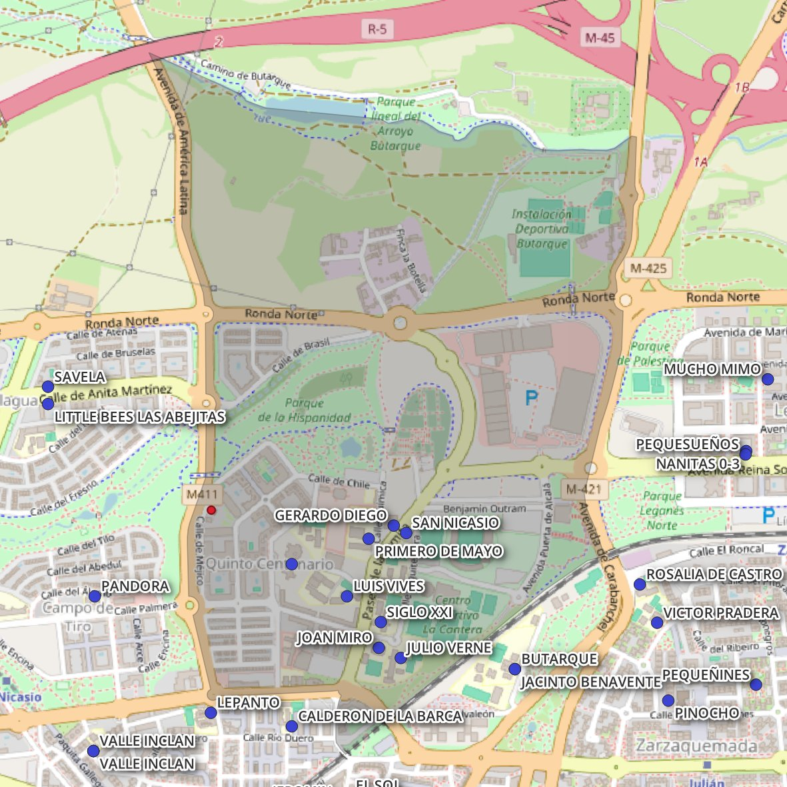

Puntos de interés en el territorio parroquial
Parroquia Santa Beatriz de Silva (Leganés) · Arciprestazgo de Leganés
Entidades religiosas no católicas

1 entidad religiosa no católica en el territorio de la parroquia.
Testigos de Jehová (1)
- Salón del Reino de los Testigos Cristianos de JehováPaseo de la Ermita 8 (6), Leganés
Fuente: Registro de Entidades Religiosas del Ministerio de la Presidencia, Justicia y Relaciones con las Cortes. Situación en el mapa: dirección geocodificada con CartoCiudad (IGN) o Nominatim (OpenStreetMap).
Centros educativos

8 centros educativos en el territorio de la parroquia (público: 8).
| Centro | Tipo | Titularidad | Domicilio | Web |
|---|---|---|---|---|
| CENTRO DE FORMACION EN ELECTRICIDAD, ELECTRONICA Y AERONAUTICA | Centro de formación para el empleo | Público | Paseo de la Ermita, 17, 28918 Leganés | Página web |
| GERARDO DIEGO | Colegio de educación infantil y primaria | Público | Paseo de la Ermita, 19, 28918 Leganés | Página web |
| JOAN MIRO | Colegio de educación infantil y primaria | Público | Calle de la Ingeniería, 2, 28914 Leganés | Página web |
| JULIO VERNE | Instituto de educación secundaria | Público | Calle de la Ingeniería, 4, 28918 Leganés | Página web |
| LUIS VIVES | Instituto de educación secundaria | Público | Paseo de la Ermita, 15, 28918 Leganés | Página web |
| PRIMERO DE MAYO | Unidad de formación e inserción laboral | Público | Calle Química, 1, 28914 Leganés | Página web |
| SAN NICASIO | Instituto de educación secundaria | Público | Paseo de la Ermita, 4, 28918 Leganés | Página web |
| SIGLO XXI | Instituto de educación secundaria | Público | Calle de la Ingeniería, 1, 28918 Leganés | Página web |
Fuente: registro de centros educativos de la Comunidad de Madrid. Solo se recogen los centros de alta.